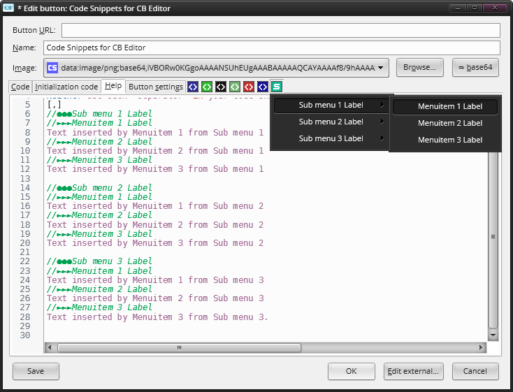
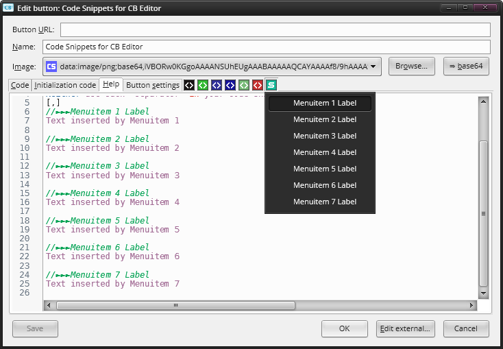

Basic info
- Author/s: Odyseus
- Creation Date: January 10, 2015
- Status: Complete
- Contributor/s: SendAbuse, okkamas_knife and Infocatcher
- Licence: Mozilla Public Licence
- Button Homepage
This button adds a button inside the Custom Buttons Editor with a customizable menu which contains code snippets that can be inserted into your buttons. It is based on a button called Custom Paste for Custom Buttons that can be found in the Mozilla Russian forum. The author is SendAbuse with code contribution from okkamas_knife and InfoCatcher.
I greatly modified the original version of this button and I added more capabilities to it. Ability to create sub-menus, ability to open/close the generated menus on mouseover/mouseout, etc.
Usage
The menus/menu items created for the button that will be inserted in CB Editor are generated with information stored inside the Help tab of this button. More than one version of this button can be installed at the same time containing different code snippets. To differentiate each version installed, it is possible to change the color of the each button individually. It's also possible to display its label and change it. It will also work for buttons edited in tabs (See Edit Custom Button in Tab button by InfoCatcher).
Special "markers" are used to identify what would later become a menu or a menu item.
- //●●●: This marker is used to create menus. Every character from this marker to the end of the line will become the label of the menu. Starting from the next line after this marker, up to the next menu marker or the end of the Help tab content, all text will become part of this menu.
- //►►►: This marker is used to create menu items. Every character from this marker to the end of the line will become the label of the menu item. Starting from the next line after this marker, up to the next menu/menu item marker or the end of the Help tab content, all text will become the "code snippet" itself (The actual text that will be inserted when the menu item is clicked).
- /*=>|<=*/: This marker is used as "insertion point" for the cursor. After inserting a code snippet containing this marker, the cursor will be positioned in the exact place this marker was. Needless to say, there can only be one marker of this type en each menu item/code snippet.
A basic example with sub-menus
The code snippets button's main menu can have only menu items without no menus. You just have to avoid using the menu marker (//●●●) and every menu item found inside the Help tab will be created directly inside the main menu.
A basic example with only menu items
Options - Acceced by middle-clicking on this button
- Allow checked: If checked/enabled, Code Snippets for CB Editor will also reflect its enabled state of by its pressed/checked state.
- Allow selection: If checked/enabled, the recently pasted text will be auto-selected, except when the pasted text contains a "cursor anchor".
- Button background color: Sets the background color of the Code Snippets button inside CB Editor.
- Cursor anchor: Here you can change the "cursor anchor" used to create "cursor's insertion points".
- Change Label: It allows you to customize the button label inside CB Editor.
- Open menu on mouseover: If checked/enabled, the Code Snippets button inside CB Editor will open on mouse over.
- Open/Close delay: Sets the open/close delay for "Open menu on mouseover" (In milliseconds).
- Show "on-self" items: If checked/enabled, the Code Snippets button inside CB Editor for this button will show some additional menu items to facilitate menus and menu items creation.
- Show button label: If checked/enabled, the Code Snippets button inside CB Editor will display its label.
Shortcuts/Button clicks
- Left Click: Enable/Disable button on CB Editor.
- Midle Click: Open options menu.
- Left Click on menu items: Insert code snippet.
- Middle Click on menu items: Insert code snippet without closing the menu popup.
Compatibility
This button is intended to work with all Firefox-based browsers, SeaMonkey and Thunderbird. But it has been tested only in the following environments.
Arch Linux (XFCE and KDE) - Firefox 35.xWindows 7 x64 - Palemoon x64 25.x.x, Thunderbird 31.x, Cyberfox x64 35.x and latest versions of Firefox ESR/Stable/Beta
Error report
- Wich plattform and its version (Linux, Mac or Windows).
- Wich application and its version (Any Firefox-based browser, Thunderbir or SeaMonkey).
- Error/Browser console output, if any.
- If it's easier for you to report an error with images, and if the image is too large or there are more than one, publish the links to them, do not post them using the IMG tag in the message.
- Be willing to follow troubleshooting instructions.